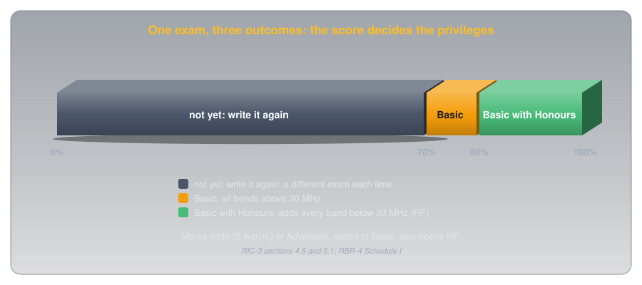
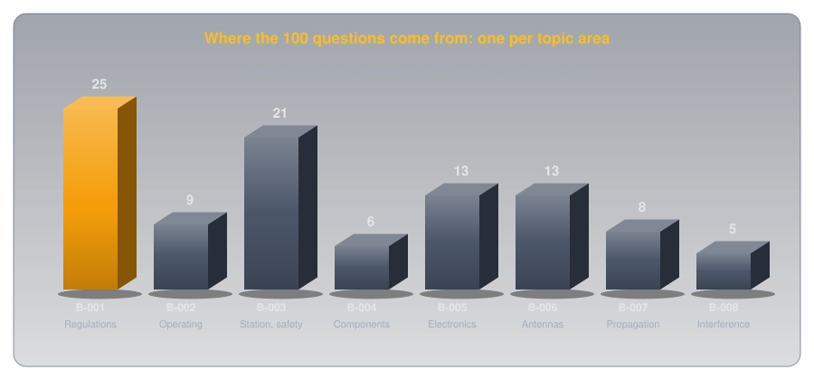
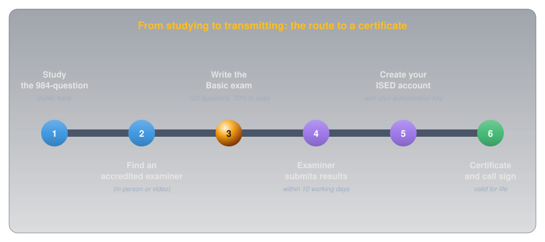

Getting Your Amateur Radio Certificate in Canada🔗
Beginner
This article opens the Getting Licensed topic. No prior knowledge required. Covers Basic exam section B-001 (Regulations and Policies), topics B-001-002, B-001-004, and B-001-022, and touches B-001-013, B-001-015, and B-001-017.
In Canada, the right to transmit on the amateur bands never expires, and the government charges nothing for it. There's no licence to renew and no annual fee: one 100-question multiple-choice exam, written in front of a volunteer examiner, earns an Amateur Radio Operator Certificate that lasts for life, along with a call sign of your own. People commonly call it a ham radio licence; the formal name is the certificate, and it's the only authorization an amateur station needs.
Two ideas shape everything about it:
- One certificate is the whole authorization. Canada once issued an operator's certificate and a separate station licence. Since April 1, 2000 they've been one document, held by the person rather than attached to a radio, so it goes wherever you go.
- Your score decides your privileges. The same exam can earn two levels: 70% earns the Basic Qualification and every band above 30 MHz; 80% earns Basic with Honours and adds the long-distance bands below 30 MHz. More qualifications can be added later, in any order.
This article covers what the certificate is, what each level lets you do, how the exam works, and what happens after you pass. The rules come straight from Innovation, Science and Economic Development Canada (ISED), the federal department that runs the amateur radio service.
Where the Rules Come From🔗
Amateur radio in Canada sits on a short stack of documents, and the exam asks about all of them:
- The Radiocommunication Act is the law that gives the federal government authority over radio, administered by ISED.
- The Radiocommunication Regulations are made under the Act. They define the amateur radio service and the operator certificates.
- RBR-4 (Issue 3, July 2022), a "regulation by reference", sets the operating standards: which bands each qualification may use, power limits, and how to identify your station.
- RIC-3 (Issue 5, March 2022) and RIC-1 (Issue 8, May 2025) are information circulars: plain-language guides to the qualifications and the exams. RIC-3 notes that these circulars "have no status in law"; they explain the regulations rather than add to them.
The Regulations define the service itself: amateur radio is "a radiocommunication service in which radio apparatus are used for the purpose of self-training, intercommunication or technical investigation by individuals who are interested in radio technique solely with a personal aim and without pecuniary interest." That last phrase, no money involved, explains many of the rules you'll meet later, from no business traffic to no paid operation.
Idea One: One Certificate, for Life🔗
ISED's page on amateur radio operator certification explains the history: ISED "combined the amateur radio operator certificate and radio station licence into one authorization, the 'Amateur Radio Operator Certificate.'" Radio Amateurs of Canada (RAC), the national association, describes the old arrangement on its requirements page: the operator certificate "was issued for life and had no fee associated with it, while the radio station licence was issued on a yearly basis and a licence renewal fee was charged." RAC dates the change: "Effective April 1, 2000," the two documents were combined into one. Dropping the station licence left only the lifetime certificate.
So a Canadian amateur doesn't license each radio or each location. The certificate authorizes the person, and a handheld, a car radio, and a home station are all covered by it. (ISED still licenses one rare case separately: amateur satellites and the ground stations that control them.)
The certificate does carry a few obligations:
- Keep your address current. RBR-4 section 13 requires you to notify ISED's Amateur Radio Service Centre "of a change of mailing address within 30 days."
- Produce it on request. Under section 38 of the Regulations, a radio inspector can ask to see your authorization, and you have 48 hours to show it or a copy.
- Keep a Canadian address. ISED's frequently asked questions note that without a valid address in Canada you can't be assigned or keep a Canadian call sign.
Definition: Qualification
One of the levels recorded on an Amateur Radio Operator Certificate: Basic, Basic with Honours, Morse Code (5 words per minute), or Advanced. Every certificate starts with Basic; the others add privileges. "Licence" is the everyday word, but in Canadian regulations you hold a certificate with qualifications.
Idea Two: Your Score Decides Your Privileges🔗
The Basic exam is 100 multiple-choice questions, one drawn from each of 100 topic areas. RIC-3 section 5.1 sets the pass mark at 70%, and "a score of 80% or above will grant the individual additional privileges commensurate with the Basic Qualification with Honours."

The dividing line is 30 MHz. Signals on bands above it, such as the 2 m band (144–148 MHz, RBR-4 Schedule I), mostly travel in straight lines, which suits local and regional contacts, often through repeaters. Bands below it, the high frequency (HF) bands, can bounce off the ionosphere and reach other continents. RIC-3 explains why Honours unlocks them: HF access goes to those who have "demonstrated a superior knowledge of operational, technical and regulatory requirements by achieving a mark of 80% or above."
What Each Qualification Allows🔗
RIC-3 section 4.5 summarizes the privileges, and RBR-4 sets the details:
| Qualification | How to get it | What it adds |
|---|---|---|
| Basic | 70% on the 100-question Basic exam | Every amateur band above 30 MHz. Up to 250 W DC input power. Build commercially designed transmitter kits; reprogram radios by software (no circuit changes). Operate cross-band repeaters. |
| Basic with Honours | 80% or more on the same exam | Everything in Basic, plus every amateur band below 30 MHz |
| Morse Code (5 w.p.m.) | Send and receive Morse at 5 words per minute for three minutes, 100% pass mark | With Basic: every amateur band, including HF |
| Advanced | 70% on a separate 50-question exam | Every band below 30 MHz (with Basic), up to 1,000 W DC input, build and modify transmitters, set up repeaters and club stations, remote control of stations |
Basic's power limit has a precise form in RBR-4 section 10.2: 250 W of direct-current input "to the anode or collector circuit of the transmitter stage that supplies radio frequency energy to the antenna", or, measured as output, 560 W peak envelope power for single-sideband transmitters and 190 W carrier power for everything else. Later articles unpack those terms; for now, a typical handheld radio puts out a few watts, so the limit is generous.
Qualifications can be added in any order, but the Basic comes first: RIC-1 section 7.1 says a candidate "may attempt one or all qualifications at any time, but no certificate will be issued unless the candidate has passed the examination for the Basic Qualification."
Operating Before You Pass🔗
The certificate is needed to transmit, not to listen or to learn. Anyone can listen to the amateur bands with any receiver. And RIC-3 section 4.5.4 allows that "non-qualified persons may use an amateur radio station, provided a qualified operator is present to perform the control functions": a club station or a licensed friend can put you on the air under their supervision before you've written the exam. Transmitting on your own, without a certificate, is not allowed.
How the Exam Works🔗
The exam is a closed-book, multiple-choice test, and the whole question bank is public.

- The questions come from a public bank. ISED publishes all 984 Basic questions, with answers, on its exam generator site, along with practice exams. This site's ISED Basic Anki deck turns the same bank into flashcards.
- No time limit. RIC-1 section 7.2 notes that most candidates finish within an hour and rarely need more than two.
- What you may bring. RIC-1 allows ISED's one-page formula and block-diagram reference sheet, and a calculator that can't store formulas or text. Nothing else.
- Photo identification. Candidates show photo ID before starting.
- No age or nationality limits. RIC-3 section 7.1: "There are no age or nationality restrictions for candidates."
- Retakes are unlimited. A candidate who fails "may retake the test as often as necessary", with a different exam each time (RIC-3 section 5.5).
Accommodations🔗
The exam can be adapted, but not skipped. RIC-3 section 7.2 is firm that "no candidate may be exempted from being tested for any of the qualifications," and that a candidate with a disability should discuss an accommodated procedure with the examiner. RIC-1 section 6.4 lists two options anyone may request: the exam "may be administered orally", and it "may be divided into segments" taken at the candidate's own pace. And when a candidate's language is neither English nor French, RIC-3 section 7.3 allows the examiner to give the exam orally.
From Studying to a Call Sign🔗
ISED's how to become an amateur radio operator page sets out the route, and RIC-1 fills in what the examiner does:

- Study. RIC-3, RBR-4, and RIC-9 (call signs) are ISED's recommended reading, alongside the question bank and practice exams. Many local clubs run courses.
- Find an accredited examiner. Exams are given by volunteers ISED has accredited, found through ISED's online examiner search, local clubs, or RAC. RIC-1 Issue 8 lets examiners hold exams by two-way video, face-to-face and one-on-one, and "there are no provincial or territorial restrictions": examiner and candidate only need to be in Canada.
- Write the exam. The examiner marks it and tells you the result.
- The examiner submits your results. RIC-1 section 5.2: results go to ISED "within ten (10) working days of the examination," and ISED issues the certificate once they arrive.
- Create your ISED account. The examiner gives you an authorization key; with it you create an account on ISED's certificate services site and choose a call sign on the same form.
- Your certificate arrives. From then on you may transmit within your qualification's privileges.
Fees🔗
ISED doesn't charge for the exam or the first certificate. RIC-1 section 5.3: "As of December 16, 2020, ISED no longer charges fees for examinations conducted by ISED personnel." Accredited examiners, however, "may charge an examination fee to candidates to recover the cost of administering an examination," and none of it goes to ISED. ISED's certification page lists what's free and what costs $60:
| Free | $60 |
|---|---|
| The first certificate and call sign | Changing an existing call sign, including to a two-letter one |
| A replacement for a lost or damaged certificate | A call sign for a club or organization |
| A new call sign after moving to another province or territory | An additional call sign |
| A new certificate after adding Morse or Advanced | A special event call sign |
Your Call Sign🔗
A Canadian call sign has three parts: a two-letter prefix block, a digit for the region, and a suffix of two or three letters.
![A call sign drawn as three 3D blocks: a two-letter country block such as VA, then a digit for the area where the operator lives, such as 1 for Nova Scotia, then a suffix of two or three letters, shown blank because this is a format example and not a real station. Beneath, the prefixes for every province and territory: VE1 and VA1 Nova Scotia, VE2 and VA2 Quebec, VE3 and VA3 Ontario, VE4 and VA4 Manitoba, VE5 and VA5 Saskatchewan, VE6 and VA6 Alberta, VE7 and VA7 British Columbia, VE8 Northwest Territories, VE9 New Brunswick, VO1 Newfoundland, VO2 Labrador, VY1 Yukon, VY2 Prince Edward Island, VY0 Nunavut.](../images/getting_your_certificate/call_sign.svg)
- The prefix follows where you live. RBR-4 Schedule V lists them: VE1 or VA1 for Nova Scotia, VE3 or VA3 for Ontario, VE9 for New Brunswick, and so on. Move to another province and you're issued a new call sign with the new prefix, free.
- You choose the suffix. RIC-9 lets applicants request any unassigned two- or three-letter suffix, with up to three choices in order of preference; ISED's available call sign search shows what's free.
- Two-letter suffixes are rationed. In the VE1 to VE7 and VO1 areas, demand exceeds supply, so RIC-9 reserves them for amateurs who've held the Basic Qualification for at least five years, or who are taking over a deceased family member's call sign.
- It's yours for life. RIC-9: "Call signs are assigned to individuals for a lifetime."
RIC-9's current version is a provisional issue from 2005 and still refers to Industry Canada, ISED's former name; RBR-4's newer Schedule V is the authority for the prefixes themselves.
Common Misconceptions🔗
A few beliefs about the Canadian certificate come from older rules or from the United States:
- "You need to buy a licence every year." Not since 2000: the certificate is free and lasts for life.
- "You must learn Morse code." Not for the Basic Qualification. Morse is optional, and HF access comes through 80% on the Basic exam just as well.
- "Canada has Technician, General, and Extra licences." Those are United States licence classes, set by the Federal Communications Commission. Canada has Basic, Basic with Honours, Morse Code, and Advanced.
- "You have to be a citizen." There are no age or nationality limits on the exam, and RIC-9 says a Canadian call sign goes to anyone, "including a foreign national," who passes; what you need is a Canadian address.
- "A disability means you can skip part of the exam." No one is exempted, but the exam can be given orally or in segments.
Practice🔗
1. The Dividing Line
You score 76% on the Basic exam. Which bands may you transmit on, and what would you need to transmit below 30 MHz?
Solution
76% earns the Basic Qualification: every amateur band above 30 MHz. For the bands below 30 MHz you'd need Honours (80% on a Basic exam, which you could write again), the Morse Code qualification, or the Advanced qualification, any of them added to your Basic.
2. What It Costs
What does ISED charge for the exam and your first certificate, and what might you still pay?
Solution
ISED charges nothing for its own exams or for the first certificate and call sign. An accredited examiner may charge a fee to recover their costs, which isn't paid to ISED.
3. Moving House
You move from Halifax to Fredericton. What must you tell ISED, by when, and what happens to your call sign?
Solution
You must notify ISED of your new mailing address within 30 days (RBR-4 section 13). Because you've moved from Nova Scotia (VE1/VA1) to New Brunswick (VE9), you'll be issued a new call sign with the VE9 prefix, at no charge.
4. Before the Exam
A friend with a certificate invites you to talk on their station before you've written the exam. Is that allowed?
Solution
Yes, with conditions. RIC-3 section 4.5.4 allows non-qualified people to use an amateur station "provided a qualified operator is present to perform the control functions." Your friend stays in control, operating within their own certificate's privileges.
5. The Order of Qualifications
Can you write the Advanced exam before the Basic?
Solution
You can attempt any qualification at any time, but no certificate is issued until you pass the Basic (RIC-1 section 7.1). Advanced on its own earns nothing until Basic is added.
6. Valid How Long?
How long is an Amateur Radio Operator Certificate valid, and does it need renewing?
Solution
It's valid for life and never needs renewing. Keep your address up to date with ISED instead.
Quick Recap🔗
-
One certificate
The Amateur Radio Operator Certificate is the only authorization a station needs. It belongs to the person, not the radio.
-
Valid for life
Free to issue, never renewed. Keep your mailing address current within 30 days.
-
70% and 80%
70% earns Basic, every band above 30 MHz. 80% earns Honours, adding the HF bands below 30 MHz.
-
More qualifications, any order
Morse Code (5 w.p.m.) and Advanced add privileges, but Basic must come first.
-
A public exam
100 questions, one per topic area, from a published bank of 984. No time limit, unlimited retakes.
-
Accredited examiners
In person or by video, anywhere in Canada. They may charge a fee; ISED doesn't.
-
Your call sign
Prefix by where you live, suffix by your choice, assigned for life. Two-letter suffixes need five years.
-
On the exam
Certificate valid for life; first certificate free; $60 to change a call sign; 30 days to report a new address; 48 hours to show your certificate to an inspector; no age limit; Basic first, others in any order; Morse at 5 w.p.m.; no exemptions for disability; examiners may charge a fee to recover costs.
On the exam: the station-copy questions
Two questions in the bank ask where the certificate should be kept: one expects "at the station", the other "at the address provided to ISED". The regulations themselves only require you to show it, or a copy, within 48 hours of an inspector's request. Learn both answers as the bank words them.
What's Next🔗
With the certificate's shape clear, the next question is exactly what it lets you transmit. What You May Transmit: Bands, Power, and Identification reads RBR-4 section by section: which bands each qualification opens, how wide and how strong a signal may be, and when to send your call sign.
Further Reading🔗
Regulations
- RIC-3: Information on the Amateur Radio Service — Issue 5, March 2022: qualifications, privileges, the exam syllabus, and accommodations
- RIC-1: Guide for Accredited Examiners — Issue 8, May 2025: how exams are run, virtual exams, fees, and results
- RBR-4: Standards for the Operation of Radio Stations in the Amateur Radio Service — Issue 3, July 2022: bands, power, identification, and call sign prefixes
- RIC-9: Call Sign Policy and Special Event Prefixes — how call signs are chosen and assigned
- Radiocommunication Regulations — the definition of the amateur service and the operator certificates
- ISED: Amateur Radio Operator Certification — fees, obligations, and services
- ISED: How to Become an Amateur Radio Operator — the official steps, practice exams, and examiner search
Band Plans & Clubs
- Radio Amateurs of Canada: Requirements — the national association's summary, and how to find a course or a club
Related Articles
- ISED Basic Qualification Anki Deck — the whole question bank as flashcards
- Start Here — the electricity behind the exam's technical sections